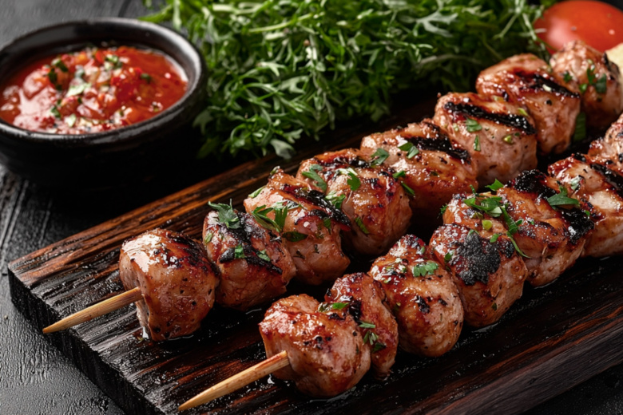
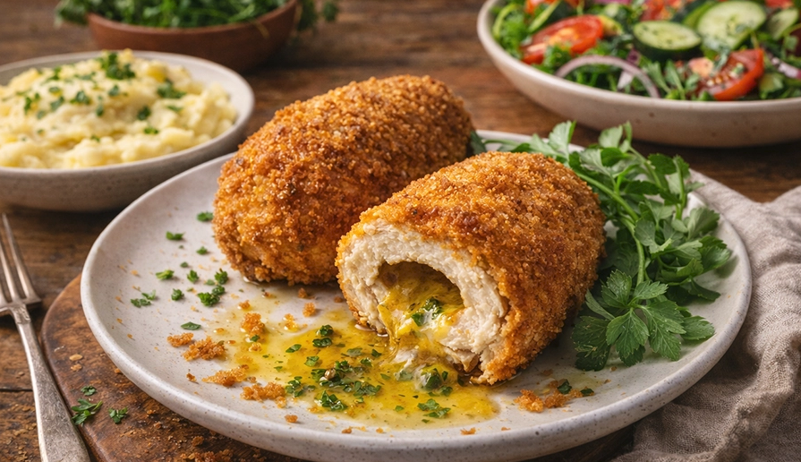
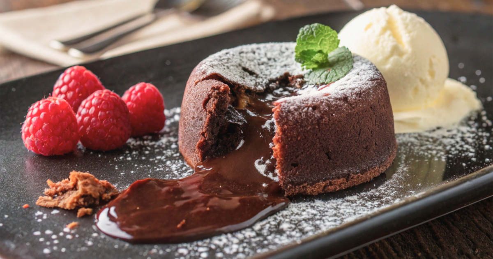
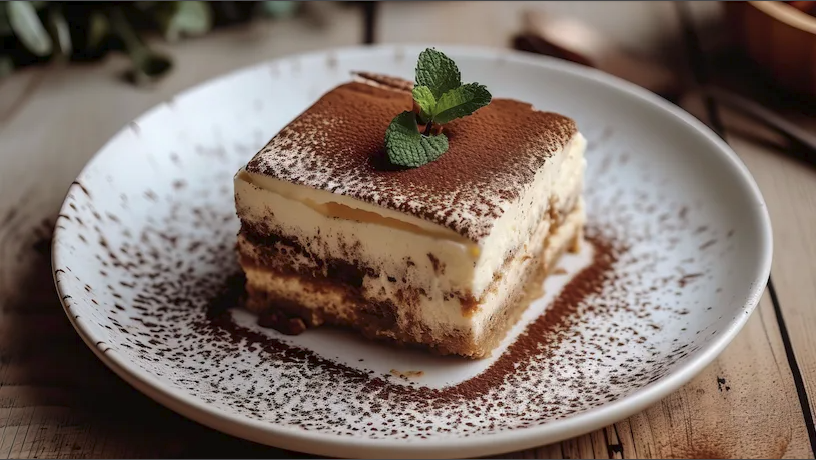
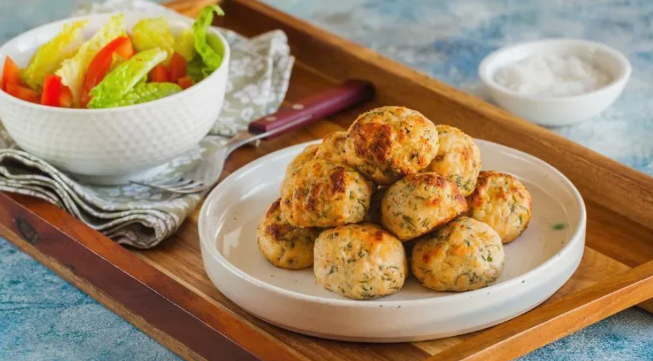

КУЛИНАРНАЯ КНИГА
лучшие рецепты на каждый день
Кулинария— это искусство, которое, чтобы не опозориться, нуждается в фантазии и капельке безумия (Ив Камдеборд)»
Телятина с грибами в сливочно соусе
Отличный рецепт нежной телятины с грибами в сливочном соусе! Блюдо получается
сочным, с насыщенным ароматом. Для вас подобрал вариант, где хорошо чувствуется грибной
вкус, но при желании можно заменить грибы или добавить другие специи.

Шашлык по грузински
В Грузии такой шашлык называют мцвади. И у него действительно есть свои особенности — часто его готовят
почти без маринада, делая ставку на качество мяса и правильную обжарку. Подобрал главные
принципы и пару рецептов, чтобы было проще повторить.

Котлета по киевски
Котлета по-киевски — это классическое блюдо русской и украинской кухонь: отбитое куриное
филе, в которое завёрнута ароматная начинка из сливочного масла, часто с зеленью, а снаружи — хрустящая панировка. Главная фишка
в том, что при разрезании из котлеты эффектно вытекает растопленное масло.

Шоколадный фондан
Шоколадный фондан (от французского fondant au chocolat — «тающий шоколад») — это французский десерт, представляющий собой небольшой
кекс с твёрдой хрустящей корочкой снаружи и жидкой, тающей начинкой внутри. При надрезании из него аппетитно вытекает густой шоколад, что
создаёт эффект извергающегося вулкана. В англоязычных странах его называют lava cake («пирожное с лавой»)

Тирамису
С удовольствием расскажу про тирамису! Это один из самых любимых итальянских десертов — нежный, с интересным сочетанием вкусов.
Я подобрала для вас главное: что в нём
ключевого, как его готовят и какие есть интересные вариации.

Фрикадельки из цесарки
Фрикадельки из цесарки получаются особенно нежными и сочными — в этом мясе меньше жира, чем в курином, но оно само по себе мягче и ароматнее.
Я подобрал для вас рецепт и пару советов, чтобы блюдо точно удалось.

Морковный торт
Морковный торт — это десерт с влажными, ароматными коржами, в которые добавлена тёртая морковь.
Он получается сочным, с лёгкой сладостью и пряным послевкусием благодаря специям.